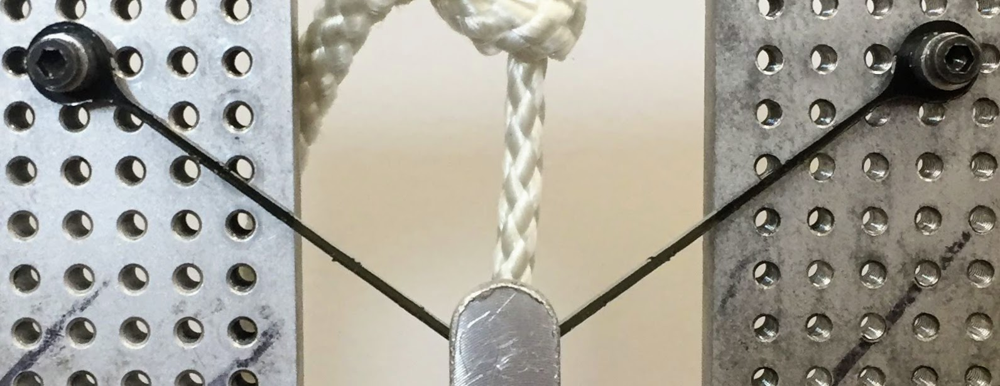
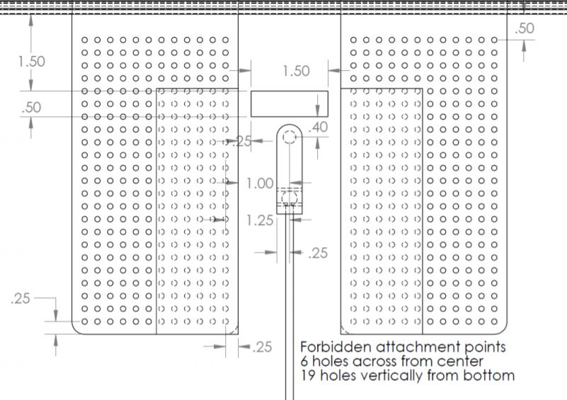

Design I Bracket Project
Project Description
 Using laser-cut acrylic, we were tasked to hold 25 pounds of weight for at least 10 seconds. The lightest bracket out of all would be declared the winner. The bracket not only had to mount with standardized hardware, but there were also limitations on where the bracket could be mounted as well as an exclusion zone that your bracket was not allowed to enter. The bracket would also be rejected if it deplaced the weight by more than 1/4 inch in any direction.
The image on the left is a drawing of the testing apparatus. The region that is boxed off on both sides is the region in which you cannot mount your bracket. The rectangular area in the middle is the forbidden region in which the bracket cannot enter. Lastly, the weight must be held 0.4 inches from the forbidden zone.
For this project there would be two rounds of testing, with your best bracket counting for your grade. Students could test beforehand, but the TA's would manufacture the actual bracket.
Initial Concepts
My initial ideas were split into a couple different 'families'.
- The first set took inspiration from bridges and other trussed systems. These were ultimatly unsuited for the task as these designs placed too much stress in bending.
- The second set of ideas came from thinking about how a rope would perform the task, as I was searching for a design to place most, if not all of the load into axial tension rather than bending or shear. My final designs came from this line of thinking.
- The last concept was one in which compression was the main stress mode as compression was around 70% stronger than tension. The weight savings were unfortunatly canceled out with the added distance traveled as well as buckling.
Version I
This was the design that was used for the initial testing. It has a few features that made it suited well for this project. First, most of the stress is placed in tension, which allows for the main beam to be very thin. This is achieved by having the location in which the weight interfaces with the bracket 'dip down'. The beams therefore essentially act as two force members. Next, the outside edge near the attachment points is not perfectly circular. There are regions that are thicker due to the stress concentrations that were present.
In the end, although this bracket weighed only 0.94 grams, it was on the safer side as it was important to have a successful test to allow for me to really push the limits on the second test.
The Iterative Process
One of the major design considerations was the inherent inconsitencies found in the laser cutters. The TA's would cut the bracket on one of three cutters, each of which had a different kerf. This therefore required extensive testing to ensure that the bracket could function regardless of laser cutter.
These incosistencies were quite frustrating for me as it was very difficult to get a consistent bracket with the low factor of safety that I was using. I performed multiple tests, and in one round of testing, I got a statistically insignificant event where I got 3 tests in a row to work but the subsequent 12 tests to result in only one success.


One aspect that I began to explore after the first round of testing was the way the bracket was attached. I explored using different mounting holes as well as explored different geometries to interface with the mounting pegs. I ended up determining that the initial concept of circular holes was the most consistent for minimal weight gain.
Final Design
Through my multitudes of both Solidworks iterations, and physical testing, I was able to make significant changes to my bracket for the second round of testing. If you compare the stress models for both versions, three things become apparent, first the maximum stress of the final version is significantly lower. Second, the contact stresses, especially at the bottom are significantly lower. Finally, the difference in stress between the top and bottom of the main beam is signifacntly less.
- The first major change was how the weight was being held. Before, where there was the dip as well as the complete circle holding the weight, now there was section that had multiple fillets, and differing thickness. Not only did this decrease the stress at and around the point of contact, but it allowed for more of the stress within the beams to be tension.
- With this decrease in stress within the main beams, they were able to become slightly thinner than the first design. This was mainy an improvement in relation to weight.
- The last major alteration between versions was the lack of localized thicker portions at the upper contacts. With the changes made lower down in the design, like the contact stresses int the lower contact, the upper contact stresses were no longer the driving stresses and those thicker parts could be removed for weight saving purposes without jepordizing the structural integrity.
Discussion
My final bracket weighed 0.72 grams. Not only was this nearly a 25% reduction of mass from an already light bracket, but my bracket was 8% lighter than the next lightest bracket. With my two brackets (0.94g and 0.72g), I was the best in the class for both rounds of testing.
One of the greatest lessons I learned during this whole process was the difficulties of working around manufacturing constraints. When a part is functioning with a factor of saftey close to 1, any small defect could spell disaster. The large amount of testing that I had to conduct was due to this constraint. In an environment where large amounts of testing would not be possible, such as the real world, I would have to settle for a much higher fator of safety.
One skill that I gained from this project was in using Solidworks Simulations. I previously had limited exposure to the software, but after the number of iteartions that I tested, I became very comfortable with the it and my ability to run static simulations and get the desired results.